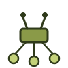

OpenRouter + Claude Code Setup
Set up OpenRouter — a unified API that routes requests to dozens of different language models — to work alongside Claude Code, so I can pull in whichever model fits a given task from inside the same workflow I already use for coding. A personal, ongoing project in API key management, model routing, and comparing how different models perform on the same problem.